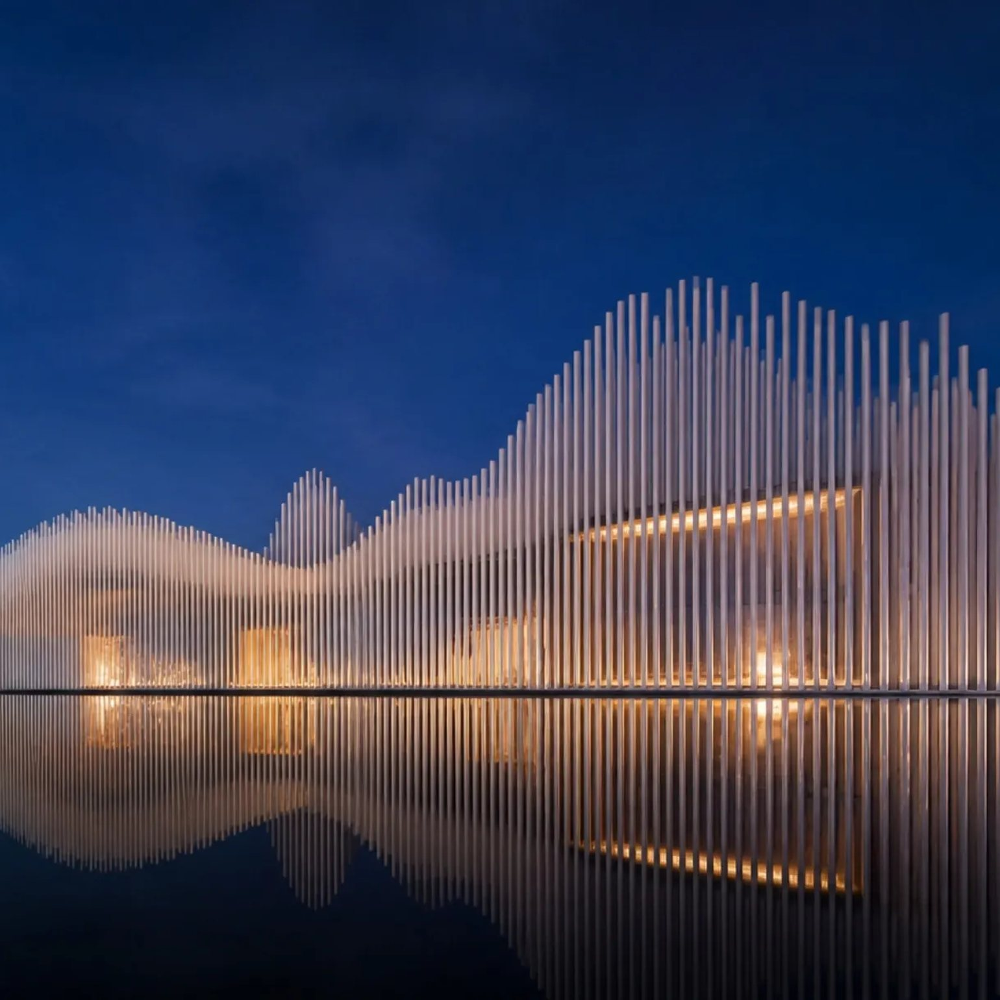
הדמיההמשפט על אדריכלות כמוזיקה שקפאה נאמר לפני כמעט מאתיים שנה כמטאפורה. DataSong לוקחת אותו מילולית ומריצה אותו בשני הכיוונים: סדרה אחת של מספרים מעולם התכנון נשמעת כיצירה בארבע שכבות, נבנית כשרטוט, ומתפרשת כדימוי אדריכלי. שמונה יצירות מראות מה מתגלה כשאותם נתונים חייבים להחזיק שלוש צורות בבת אחת.
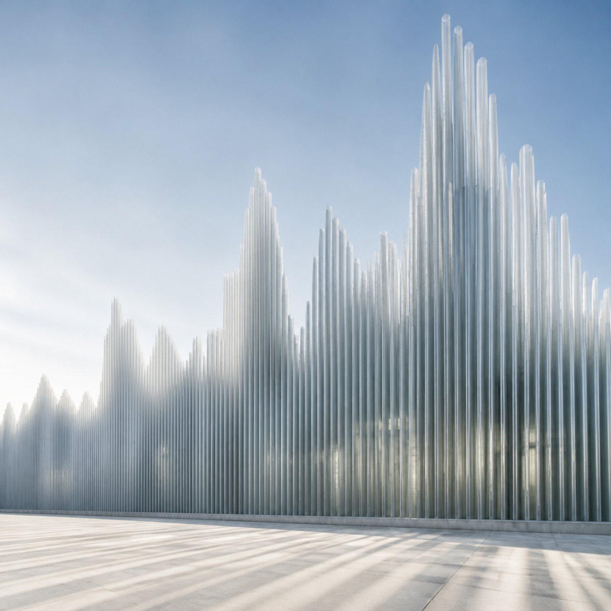
הדמיהבשיחה עם יוהאן פטר אקרמן במרץ 1829 קרא גתה לאדריכלות "מוזיקה שקפאה". רעיון דומה הופיע עוד קודם אצל הפילוסוף שלינג. מאז המשפט מצוטט בכל מקום, ותמיד באותו תפקיד: מחמאה לבניין, לא הוראת עבודה.
הבעיה במטאפורה היא שאין לה כיוון חזור. אי אפשר להפשיר בניין ולשמוע אותו. אבל אם מתחילים צעד אחד קודם, במספרים שמהם נגזר המקום, אפשר. גובה קרקע, צפיפות, נפח תנועה: כל אלה הם סדרות, וסדרה יכולה להתנגן לפני שהיא נבנית.
Ich nenne die Architektur eine erstarrte Musik.
"אני קורא לאדריכלות מוזיקה שקפאה."
גתה, בשיחה עם אקרמן, 1829
יאניס קסנאקיס עבד במשרד של לה קורבוזיה ובמקביל הלחין. ביצירה Metastaseis (1953–1954) הוא שרטט את הגליסנדי של כלי הקשת כקווים ישרים על נייר מילימטרי. הקווים יצרו יחד משטחים מעוקלים שנבנו כולם מישרים.
כמה שנים אחר כך אותה גאומטריה הפכה לבניין: ביתן פיליפס בתערוכת אקספו 58 בבריסל, קליפות דקות של פרבולואידים היפרבוליים. הצליל והמבנה חלקו שרטוט אחד. זה בדיוק הגשר שהיצירות כאן הולכות עליו, רק שהשרטוט מגיע מנתונים עירוניים ולא מתווים.
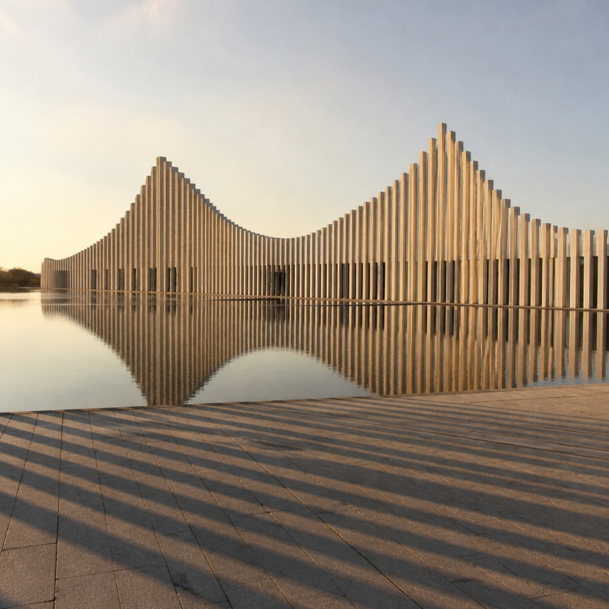
הדמיההזמן. כל נקודה הופכת לצליל, והערך קובע את גובהו. מעל המנגינה נבנות הרמוניה שמתחלפת כשש־עשרה פעמים ביצירה, ביס שעוקב אחרי המגמה הרחבה, וקצב שמכה רק בנקודות מפנה. הכלל האחרון נבחן מול נתונים מלאכותיים: קו ישר לגמרי מקבל אפס חבטות, גל חלק כחמישה אחוזים, והילוך אקראי כשלושים ושישה. כך הקצב מודד חספוס ולא רעש.
המקום. אותה סדרה נקראת כחזית שבה כל נקודה היא מבנה, כחתך שבו הנתונים הם הקרקע, כקולונדה שבה המקצב הופך לעמודים, או כמסה שבה הזמן עולה לגובה. הבחירה בטיפולוגיה היא שאלה שמפנים לנתונים: האם הם בניין או קרקע?
הדימוי. לכל סדרה נכתב פרומפט שמחייב את הדימוי להחזיק את הצורה שלה: שתי קשתות לשני שיאי תנועה, חריץ צר לאפיק, ספירלה לגדילה שלא נעצרת. הדימוי הוא פרשנות, ולכן הוא מסומן תמיד כהדמיה.
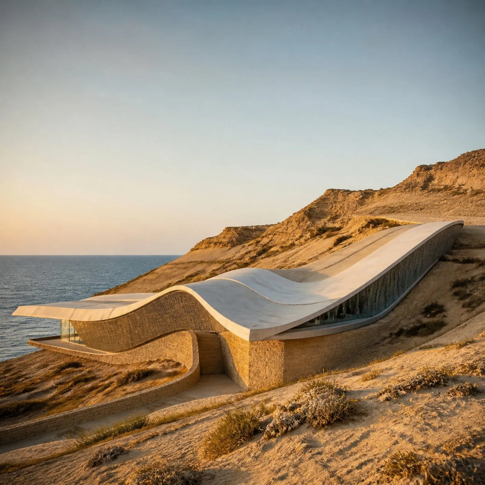
הדמיההנתונים. חתך גובה ממערב למזרח באשדוד: קו המים, רכס הכורכר, השקע שמאחוריו, ועלייה ארוכה אל השפלה.
הצליל. שלוש תנועות. הצליל הגבוה ביותר הוא הסוף ולא האמצע, וזה ההבדל בין רכס למדרון.
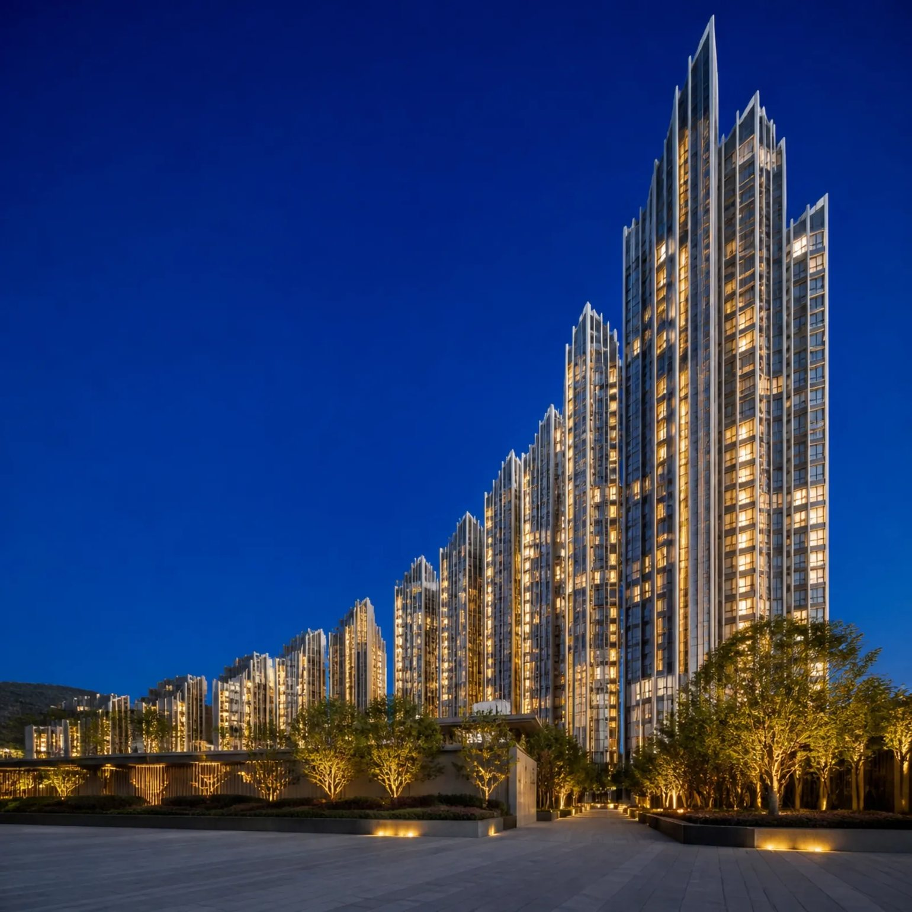
הדמיההנתונים. נפש לדונם לאורך חתך עירוני. העלייה תלולה והירידה מתונה: מרכז נבנה מהר יותר משהוא מתפוגג.
הצליל. קשת אחת גדולה, והפסגה מגיעה קצת אחרי האמצע. הדרון מחזיק את המרכז גם כשהמנגינה יורדת.
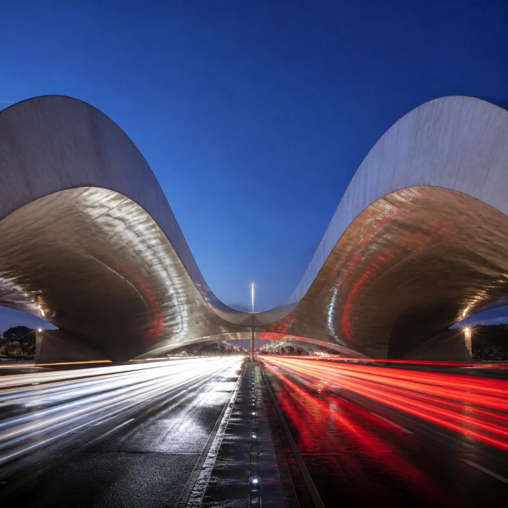
הדמיההנתונים. נפח תנועה לפי שעה בצומת. שני גלים, יציאה לעבודה וחזרה, ושקע צהריים ביניהם.
הצליל. המוטיב חוזר פעמיים כמעט זהה. הקצב מתפוצץ בדיוק בשעות שבהן העומס נבנה ומתפרק.
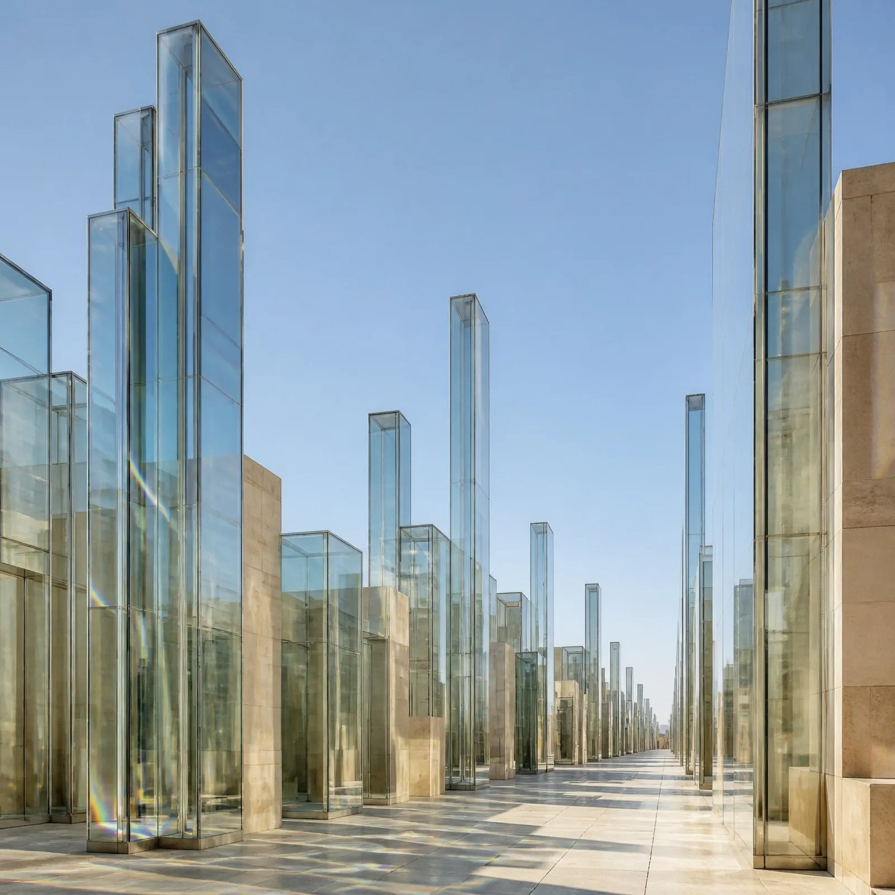
הדמיההנתונים. מספר קומות לאורך רחוב. אין מגמה, יש שכנות: כל ערך הוא בניין אחר.
הצליל. המאגר המקוטע ביותר בסדרה. כל מגדל הוא חבטה, ופעמוני זכוכית הופכים כל קפיצה לנקודה בודדת.
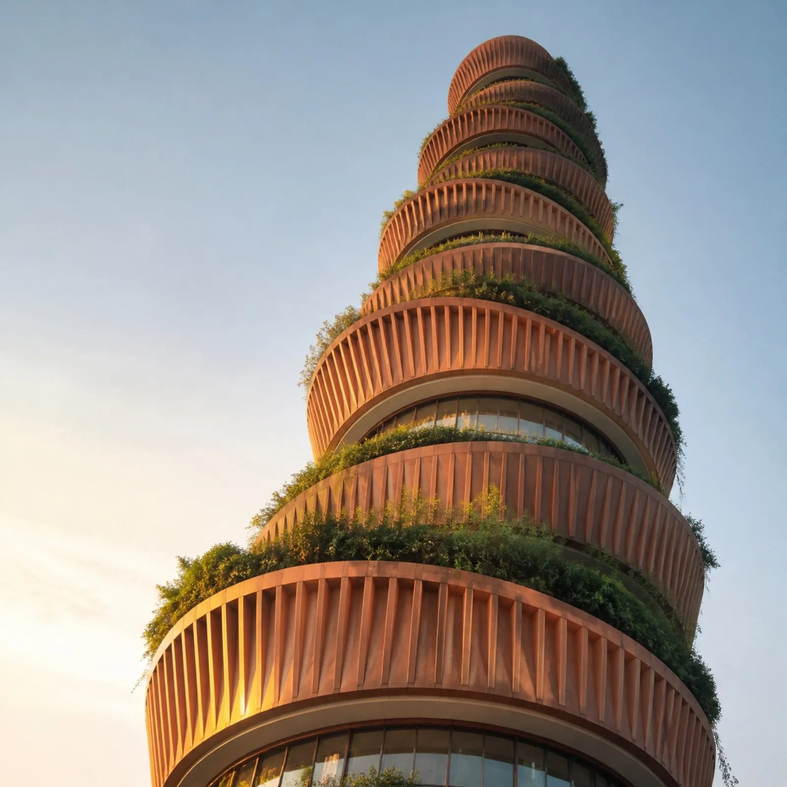
הדמיההנתונים. אלפי תושבים, שנה אחר שנה. אין שיא, יש כיוון אחד שנעשה תלול יותר בשליש האחרון.
הצליל. המנגינה כמעט לא יורדת. הקצב דליל, כי אין כאן נקודות מפנה, רק האצה.
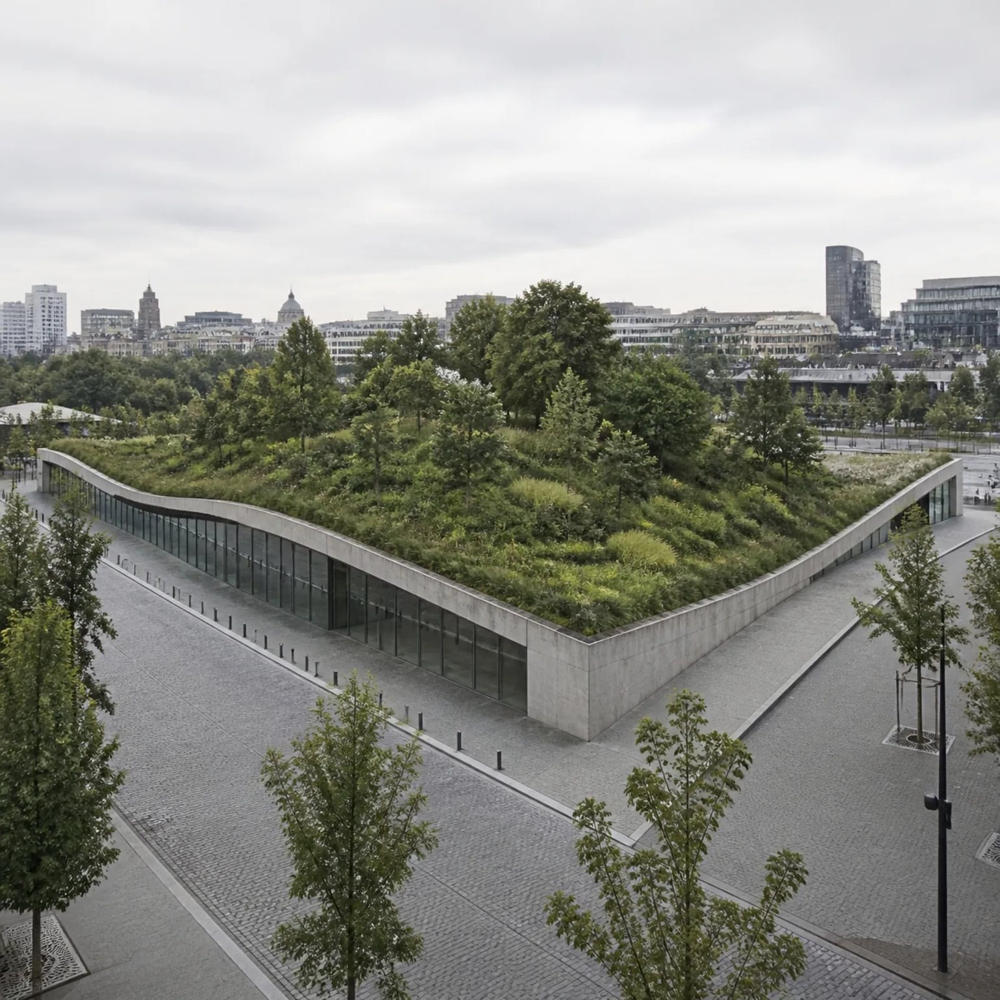
הדמיההנתונים. אחוז כיסוי ירוק לאורך חתך. הפארק לא מתחיל בגדר, הוא נבנה בהדרגה.
הצליל. המאגר הנושם ביותר. רעש קטן בקצוות, ורמה גבוהה ומוחזקת במרכז.
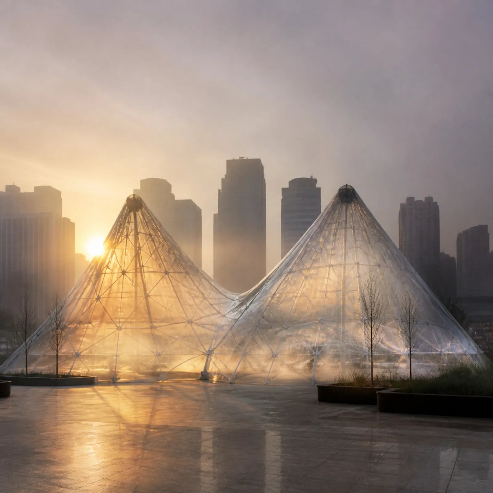
הדמיההנתונים. ריכוז חלקיקים לפי שעה. אותה צורה של יום התנועה, אבל האוויר מתנקה לאט מכפי שהוא מזדהם.
הצליל. שני שיאים, והירידה איטית מהעלייה. הצ'לו מחזיק את המתח גם אחרי שהשיא עבר.
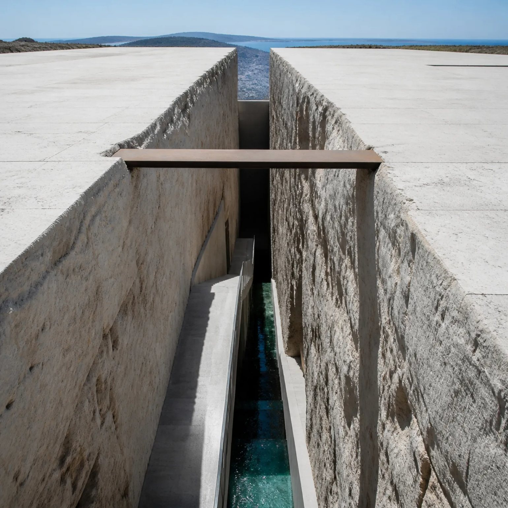
הדמיההנתונים. גובה הקרקע לרוחב נחל לכיש, מגדה לגדה. שני מישורים ועמק צר ביניהם.
הצליל. ההפך מכל השאר: השיא הוא למטה. עם נבל, הצלילה נשמעת כמו מפל.
בשיתוף ציבור, טבלה נקראת ונשכחת. צליל נזכר. כשקהל שומע את יום התנועה לפני שהוא רואה גרף, הוא מזהה את שעות העומס לבד, ומתאר את המקום במילים שלו. ההדמיה מגיעה אחר כך, כפרשנות אחת מני רבות, ולא כתשובה.
1. בחרו סדרה אחת שמספרת סיפור מרחבי: חתך, יום, או ציר רחוב.
2. השמיעו אותה לפני שאתם מציגים גרף, ובקשו לזהות את השיא.
3. בקשו לתאר את המקום שנשמע, ורק אז הציגו את השרטוט וההדמיה.
כל הדימויים במאמר נוצרו בבינה מלאכותית לפי פרומפטים שנכתבו לכל סדרה, ואינם מבנים קיימים. הנתונים הם פרופילים מייצגים: נכונים בצורתם ובהתנהגותם, ולא נשלפו ממדידה חיה.
כל הדפים לבנים ובנויים מאותה תבנית: תמונה ריבועית ברוחב חתך הזהב של הדף, תמיד באותו מקום, עמודת צד עם המספר, הכותרת והגרפיקה, וטקסט בשני טורים מתחת לתמונה.